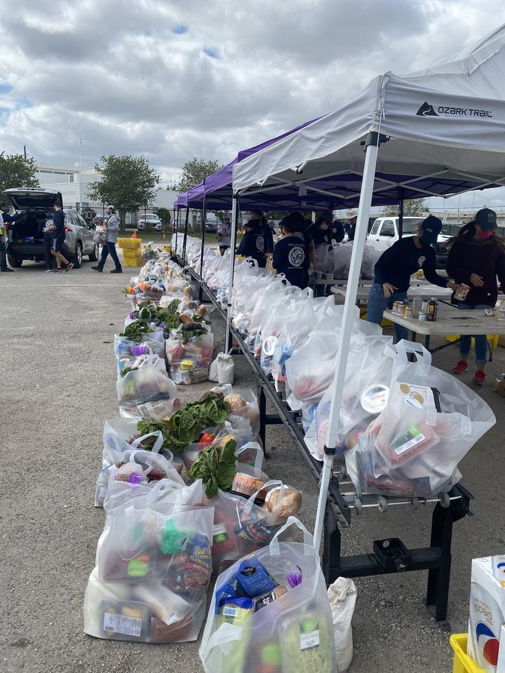
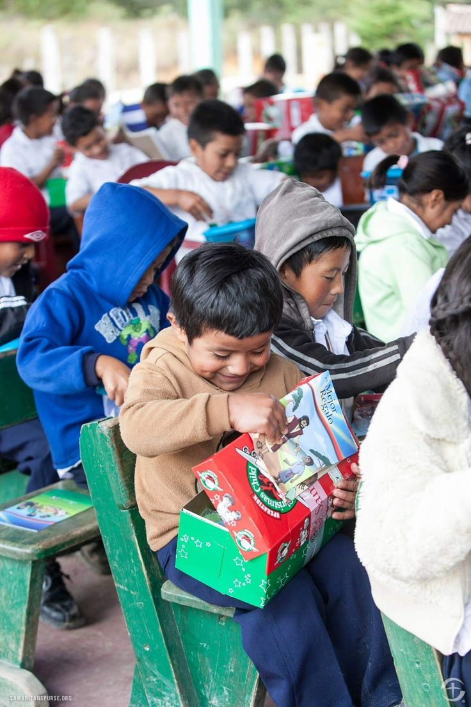
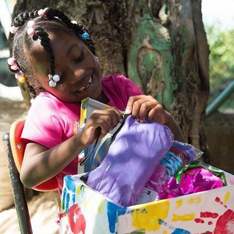

👕
Roupas
Roupas em bom estado podem ganhar um novo destino.
Ver pedidosUMA AJUDA PODE MUDAR MUITO
O Conecta é uma proposta de plataforma que facilita o encontro entre pessoas que querem doar e pessoas que precisam de ajuda.
O objetivo do Conecta é facilitar o acesso a doações e organizar informações sobre pedidos, campanhas e recursos disponíveis, aproximando quem pode ajudar de quem precisa.

Facilitamos o encontro entre quem ajuda e quem precisa.
Encontre diferentes tipos de itens que podem ser doados.
Informações e orientações para realizar doações com cuidado.
Pequenas atitudes podem fazer diferença na comunidade.
ENCONTRE UMA FORMA DE AJUDAR
Existem diversos itens que podem ser úteis para outras pessoas.
Roupas em bom estado podem ganhar um novo destino.
Ver pedidosAlimentos não perecíveis podem ajudar famílias.
Ver pedidosCadernos, mochilas e outros materiais podem ser reutilizados.
Ver pedidosMóveis que não são mais utilizados podem ajudar outras pessoas.
Ver pedidosOPORTUNIDADES DE AJUDA
São Paulo - SP
Cadernos, lápis, mochilas e outros materiais escolares.
Ver pedido →São Paulo - SP
Roupas infantis em bom estado para diferentes idades.
Ver pedido →São Paulo - SP
Arroz, feijão, macarrão e outros alimentos.
Ver pedido →
O PROBLEMA
Muitas pessoas possuem roupas, alimentos, materiais escolares, móveis e outros objetos que não utilizam mais e que poderiam ser úteis para outras pessoas.
Ao mesmo tempo, pessoas e grupos que precisam desses recursos podem ter dificuldade para encontrar doações ou descobrir onde buscar ajuda.
O problema também está na falta de informações organizadas. Campanhas, pedidos e pontos de arrecadação podem estar espalhados por diferentes lugares.
PASSO A PASSO
Uma forma simples de transformar uma intenção em uma ação.
Procure uma pessoa, campanha ou instituição que esteja precisando de ajuda.
Confira quais itens estão sendo solicitados e as informações disponíveis.
Separe os itens e verifique se estão em condições adequadas para doação.
Entre em contato e combine uma forma segura de realizar a entrega.
CAMPANHA EM DESTAQUE
Uma campanha para arrecadar materiais escolares para estudantes que precisam de apoio.
Saiba mais
INFORMAÇÃO
Alguns lugares onde você pode procurar informações e apoio.
Procure organizações e projetos sociais da sua região.
Acessar recursoEscolas e grupos comunitários também podem organizar campanhas de arrecadação.
Saiba maisVerifique campanhas e locais de coleta disponíveis na sua cidade.
Encontrar locais →INSPIRAÇÃO
Pequenas atitudes podem fazer parte de grandes mudanças.
Um item que estava parado pode voltar a ser útil para alguém que precisa.
...pode ser exatamente o que outra pessoa está procurando.
Quando informações são organizadas, fica mais fácil encontrar maneiras de colaborar.